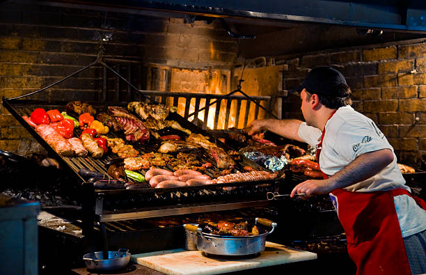
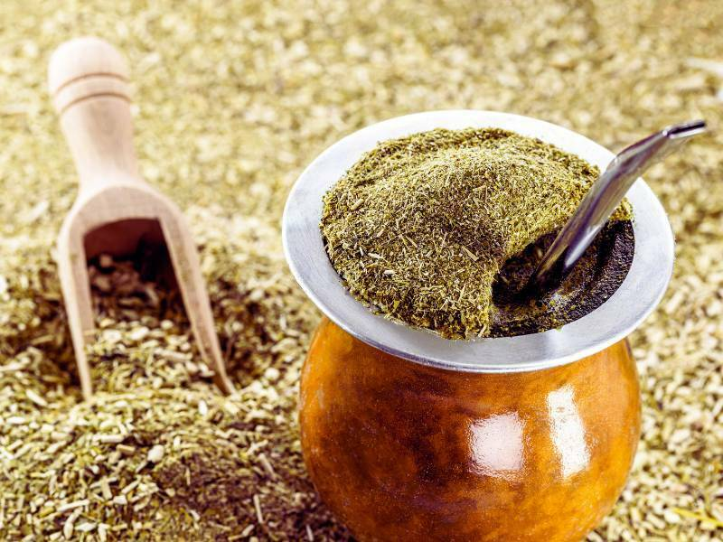

La gastronomía uruguaya es una mezcla de tradición y modernidad, influenciada por las culturas europeas y criollas. Desde el inigualable asado hasta el dulce de leche, cada plato cuenta una historia única.
Platos Típicos

El asado: la comida típica uruguaya por excelencia
Bebidas Destacadas

El mate: símbolo de amistad y tradición en Uruguay